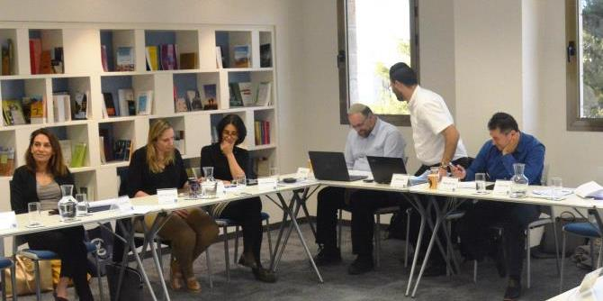
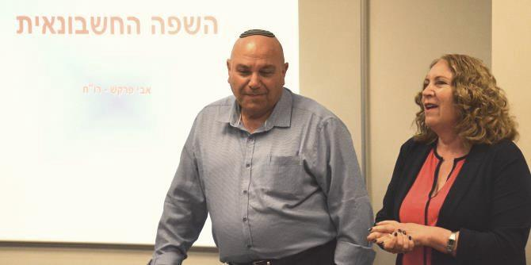

את המפגש פתחה ד"ר סלעית רון, בוגרת מחזור ה' של בית ספר מנדל למנהיגות חינוכית, בהרצאתה אחריות חברתית של דירקטורים – הילכו שניים יחדיו? ד"ר רון סקרה מקורות בנושא אחריות תאגידית וציינה שתחום זה מתייחס כיום לאחריות משולשת: חברתית, כלכלית וסביבתית. היא הציגה דוגמאות מהארץ ומהעולם וכן את מדד "מעלה", המודד את מידת האחריות התאגידית של ארגונים ופועל לקידום הנושא ולפיתוח סטנדרטים של ניהול אחראי בישראל. ד"ר רון ביקשה לבחון מהן העמדות של הבוגרים לגבי אחריות תאגידית, מה ראוי בעיניהם שייכלל בה, מהם העקרונות שירצו לקדם כדירקטורים ומהם הכלים שיוכלו לסייע להם בכך. לשם בירור שאלות אלו נערך דיון עמיתים בשלשות במתודת ה-MICROLABS.

אחר כך הרצה עו"ד אופיר כץ, מומחה לדיני תאגידים שלא למטרות רווח, אשר לצד פעילותו המקצועית מעורב בפעילות חברתית וציבורית נרחבת. כץ מכהן כיו"ר "מנהיגות אזרחית" – ארגון הגג של העמותות בישראל. הוא הציג תמונת מצב של החברה האזרחית ושל פעילותו של המגזר השלישי למען "מטרות ציבוריות" על-פי הגדרת חוק החברות המעודכן, וכן את העקרונות המאפיינים את פעילותו של המגזר השלישי, בהן הצטרפות על בסיס וולונטרי, היעדר כוונה לעשות רווחים, איסור חלוקת רווחים בין חברי הגוף המקיים את הפעילות, ועוד. כץ סקר את התאגיד המלכ"רי (מלכ"ר, עמותה, חל"צ או תאגיד מכוח חוק) כישות משפטית בעלת חובות וזכויות שבאמצעותה מבוצעת הפעילות, וכן סקר דרכים שונות לפעילות: מיזם או פעילות משותפת, פעילות באמצעות "קואליציה" של ארגונים, ארגוני-גג ומיזוגים. כמו כן נסקרו הרגולטורים: רשם העמותות, רשם ההקדשות, רשות המסים, החשב הכללי ורגולטורים מקצועיים, ודובר על הקשר בין החברה האזרחית ובין הממשלה. לסיום נדונה האחריות החלה על חברי הוועד המנהל והדירקטוריון.
עו"ד תמי בן-דוד מומחית לתחום הגבלים עסקיים ובעבר מנהלת רשות החברות הממשלתיות, הרצתה על חוק ההגבלים העסקיים. בן-דוד ציינה שמטרת החוק ליצור תנאים של תחרות הוגנת ולמנוע היווצרות מוקדי כוח בעלי "כוח שוק". כמו כן ציינה שחשיבות החוק גדלה ככל שהשוק נעשה חופשי ממעורבות הממשלה ונוצר הצורך בפיקוח וברגולציה על התנהלותם של גורמים פרטיים. בן-דוד סקרה סוגים של מבנים עסקיים: קרטלים והסדרים כובלים, מיזוגים, מונופול ועוד, והביאה דוגמאות נבחרות לפעילות רשות ההגבלים ובתי המשפט בשנה האחרונה.
את המפגש נעלה הרצאתו של רו"ח אבי פרקש, שותף ומנהל המחלקה המקצועית של מגזר מוסדות ציבור ומלכ"רים בסניף ירושלים של BDO זיו האפט רואי חשבון. ההרצאה השפה החשבונאית שרטטה לבוגרים מסגרת מושגית של סוגיות ייחודיות למלכ"רים בתחומים של ידע ודיווח חשבונאי ודוחות כספיים.

{kind=link}
{kind=link}